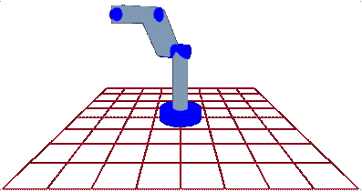

Our first several meetings were devoted to outlining what the project would look like and how things would occur and developing our proposal. Some of the decisions that we made included:
After deciding how the initial robot would appear and what language to use, we began working on implementation. Will and Danyel spent the first many weeks learning the basics of Java while Andy worked on learning Java3D. 
During spring break, Andy wrote some code that generates a floor for the factory. He is working on fixing the animation of the robotic joints and to embed the canvas in a layout. To the right is a small model of the robot and the factory floor.
During spring break, Will also worked on developing an event thrower so that the command language will be able to communicate with the robot.
At our meeting on March 17, 1999 we discussed our progress with Dr. Ramaswamy and he offered suggestions on how to work with the layout and event throwing.
Week 10ish
March 19: Will helped Danyel with her continued
pursuits to learn the Java language. Andy is currently working on solving
a problem on getting his constructors to work and dividing the program
into different objects. He has discovered that it is possible to embed a
canvas3D in a layout, even though he doesn't understand why it only workds
with BorderLayouts. (Noone in our group has a clue and as far as we can
tell no one else on campus either). The plan for next week: given a XYZ
position for the end effector (the hand) return a set of angles.
March 24: Updated Dr. Ramaswamy on our progress.
Week 11ish
March 28: Andy has postponed working on the inverse
kinematics for this week and is currently designing a hand. Will and
Danyel are both continuing their work on learning Java and Java3D.
March 31: Updated progress with Dr. Ramaswamy. The robotic arm will
currently accept a ROTATE command with 6 degrees and with move with
respect to those degrees by jumping to the new position.
Week 12ish
April 6: Andy, Will, and Danyel met to discuss the project
documentation and other aspects of the project. Discussion ensued on if
the program would be run as an applet or application and file
input/output. Andy is going to work on rewriting the rotation commands to
have the joint listen for its commands and have the robot pick up other
information.
April 11: Will is working on a parser for the project currently and Andy
is continuing his robotic efforts.
Week 13ish
April 16: Updated Dr. Ramaswamy on our progress. Will asked questions
about the depth of the parser he is creating.
April 18: Will currently has 47 modules for his parser and is
continually adding more. Will will begin testing it early this week.
Andy is working on documentation for his robotic arm stuff. Danyel is
working on the introductory documentation and appendices for the project.
Week 14ish
April 25: Andy and Danyel worked largely on our documentation. Will
is still perfecting his parser. He will be done by Monday to begin
documentation and testing.
Week 15ish aka the End of the Project
We met everyday this week finishing up and reviewing our documentation
as well as finishing up some last minute testing of the completed program.
May 3: We turned in the final document to Dr. Ramaswamy. 168 pages
with code. We were all quite proud of our work.